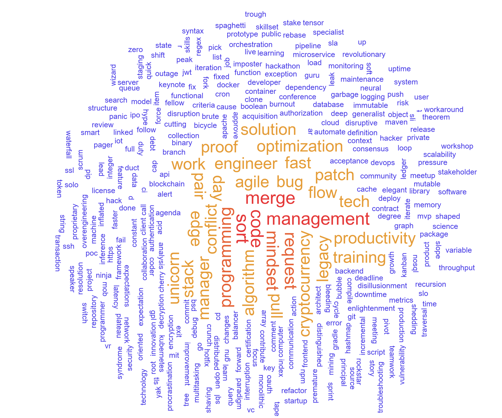

In this file, we will create a simple wordcloud using Python from scratch.
ps: python has a wordcloud library, but I can’t find even a 100% .py implementation in github, all use js to do it.
You can find my final code here,don’t forget to star it ~
And you can try the demo here
A wordcloud is a visual representation of text data, where the size of each word indicates its frequency or importance.
I learn from this article(The wordcloud invention by Jonathan Feinberg)
And learn from this implementation(Jason Davies),and hope to realize the effect like this website.
All in all, we will do these steps:
|
|
My old version ~~~
You can find my old version in repo’s old_version directory.
I initially treat each word as a rectangle object, and use a for loop to detect if collision happens. This need to check all placed words and most check is wasteful.
Besides wasteful check, I also find that the collision detection based object’s bounding box is so tricky, when there is rotation, 完蛋.
so the last effect is not so good, just support 90 and -90 degree rotation.
Here is the old effect: (有点用但不多～)
